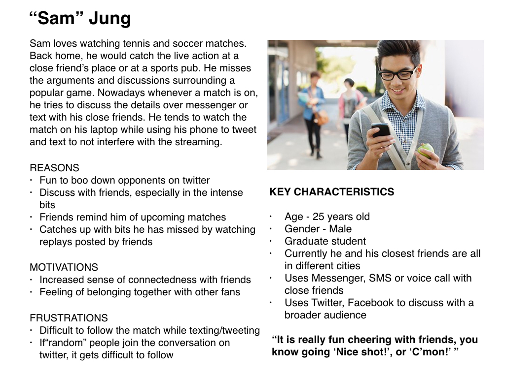

OleOle - Web App for watching live sports
Designed and developed a social computing system to enhance experience for watching live sports together*
- Task: Develop a social computing system to solve a novel problem
- What I did: Interviews, competitive analysis, sketching, storyboarding, wireframing, hi-fi prototyping, concept video
*Group project for Developing Social Computing class, Sept-Dec 2017
IDEATION
To narrow down the scope and decide a domain of common interest, we did a semi-structured brainstorming exercise. We did a timed brainstorming with each of us writing down our ideas on post-its. Focusing on quantity over quality allowed us to explore a breadth of ideas. We then grouped the ideas according to following categories — Logical, Longshot, Practical, Crowd-Pleaser, Off the wall, One we love. By categorising the ideas, we achieved a bit of structure and we could narrow down our scope. We voted on our favorite three ideas and tallied the votes. Following came out to be our favorite ideas -
- Private Media room - Create a virtual room and watch media together
- Betting for a dollar - Quick bets with your friends that help you learn something new
- Pacman for health - A running app that is based on the Pacman game
We then presented these three ideas to our peers, and based on the feedback, we decided to go ahead with the first idea.
——
USER INTERVIEWS
We conducted 5 quick interviews with individuals who use live streaming media platforms/ interact with each other while watching sports to better understand the whole experience. We wanted to understand how people interact with existing platforms/ technology and also how people interact with each other during the same time. The interviews followed a semi-structured approach with the following research questions —
- Which platforms do users use while watching a live stream?
- How does social media factor in users' experience while streaming media?
Through the interview data, we found out that the main reason behind watching media together was increased sense of intimacy and connectedness. Intimacy was defined as watching to enjoy with others (significant others/ friends) and connectedness as feeling of belonging together.
——
COMPETITIVE ANALYSIS
To study the strengths and weaknesses of existing systems, we performed a competitive analysis. We looked at platforms such as Twitch, YouTube Gaming Live, CNN++, Bilibili/ Niconico, Vh1 Pop up Video ad Instagram Live. These platforms were selected because they analysed users to interact with the system in real time while simultaneously consuming media.
——
SCOPING IT DOWN
We started off with an idea to create a private movie room, a system that would let users create and join virtual private rooms to watch movies with their friends. The movie rooms would allow users to interact with each other in real time, akin to an experience of watching movies in a theater. Three important points came up during our presentation session.
- What are the levels of user engagement with the system?
- How do people watch a game/show in the same physical space?
- How can we support people who have different levels of participation
——
We realized that user engagement while watching sports is higher than movies so we chose to focus on the former.
——
We also wanted to have a fair bit of personalization in our UI for the user, as well as keep engagement high through media available to the users (gifs, memes, etc). So we narrowed our scope to sports instead of all media. Designing for a custom sport (soccer, tennis, etc) would also help us focus on designing the minute details of the UI, which we really wanted to.
——
THE CONCEPT
With the data uncovered from the inital user research phase, we conceptualised a system that would let users create a virtual room to view sports matches together with their friends. In these rooms, users can interact with each other in real time by sending text messages, emojis, gifs, and team anthems/chants (audio presets). These mediums of interaction were deemed to provide a rich enough experience for the users without overwhelming them.
To come up with this concept, we observed how people interact with each other while watching sports with their friends while being in different locations, in sports pubs with random people and at match screenings surrounded by fans of the same team.
——
CONCEPTUALIZING THE UI
We looked at how current media/ sports providers provide rich interactivity in their systems. We used some of the good practices observed through the competitive analysis to conceptualise our proposed features. Using wireframes, we brought our ideas to life to test the UI and obtain feedback.
——
PROTOTYPING
We incorporated the feedback received from testing our wireframes while developing the high fidelity prototype. We made the prototype using Sketch and added interactivity using Invision. Since we had limited time, we could not prototype all the micro-interactions we had imagined for our system but we later demonstrated those in our concept video. The micro interactions were inspired from the FIFA and Call of Duty franchises as these applications do a good job in guiding the users for setting up a game. We wanted our users to have a frictionless experience while setting up a virtual room, so we examined a few games from these franchises. You can play around with the prototype here.

——
DEVELOPING THE SYSTEM
We implemented this system using Python, Flask and Bootstrap. We could not get through hosting this on AWS but one of our team members did a fantastic job getting this up and running within a couple of weeks. For demonstration purposes, we created a room, streamed a video using YouTube Live API and asked our classmates to join in. The system tested well, and could support interaction though text, gifs emojis. You can find the entire code repository for the system here.
——
REFLECTING ON THE PROJECT
My role throughout the course of the project was that of a UX Designer. I actively contributed to sketching, wireframing and prototyping along with generating the final concept video. Initially we as a team, wanted the system to have a plethora of features but as time passed we realized that our ideas could not be implemented in that short period of time. One important thing I learned from this project is that stripping down the features to create an MVP with just the core features should be the first step in every project.